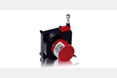
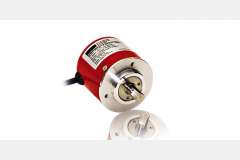
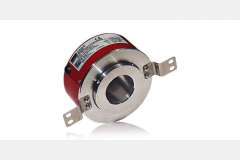
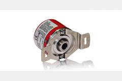
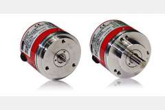
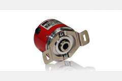

OPTİK ENKODERLER

DWE Model İpli Enkoderler
Yüksek hassasiyetli DWE model ipli enkoder sistemleri ile uzun mesafe ölçüm çözümleri.
DWP Model İpli Potansiyometreler
DWP model ipli potansiyometre sistemleri ile analog ölçüm ve kontrol uygulamaları.

MODEL PRI 50
Kompakt tasarımlı PRI 50 model optik enkoder ile hassas konum ölçümü.

MODEL PRI 50H
Yüksek çözünürlüklü PRI 50H model optik enkoder sistemi ile profesyonel ölçüm.

MODEL PRI 50SH
Üstün hassasiyetli PRI 50SH model optik enkoder ile mikron seviyesinde ölçüm.

MODEL PRI 58
Standart PRI 58 model optik enkoder sistemi ile güvenilir ölçüm çözümleri.

MODEL PRI 58H
Yüksek performanslı PRI 58H model optik enkoder ile endüstriyel uygulamalar.
MODEL PRI 58SH
Süper hassas PRI 58SH model optik enkoder sistemi ile kritik ölçüm uygulamaları.
MODEL PRI 100H
Büyük çaplı PRI 100H model optik enkoder ile geniş kapsamlı ölçüm sistemleri.